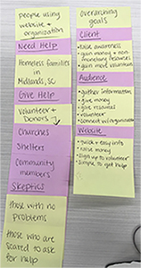

Audience
The website's overarching goals are explained below.
My client’s business goals are to inform the community about their organizations mission and how people can get involved. This may include, monetary donations, but more importantly volunteering individually or as a group such as being a host congregation.
Website visitors will be looking for information on how to volunteer their time, how to donate money or items, or they may be seeking help themselves.
The priorities of the website are to provide information for people wanting to volunteer their time or make a donation, share success stories of the organizations “graduates” and present clear instructions on how to receive help.
Goals
The website's specific goals are prioritized top to bottom and explained below.
| User | Goals | Action |
|---|---|---|
| Local Congregations and Businesses | Find information on how to volunteer as a group, make a donation, or serve as a “shelter” (applies to churches only). | They can donate, apply to be a host congregation, contact staff for volunteer opportunities. Learn more about Family Promise’s mission. |
| Community Members | Find information on how to volunteer or make a donation. | They can donate, contact staff for volunteer opportunities, and learn more about Family Promise’s mission. |
| Homeless Families | Find information on how to take advantage of the organization’s services and how to contact staff members. | They can learn about Family Promise’s services, apply for help, and how to contact staff when in need. |
- Local Congregations and Businesses are the first priority because they would need to find the information on recommending a family and becoming a host congregation.
- Community Members are the second priority because they would need to find information on how and when they could volunteer.
- Homeless Families are the last priority because most are not going to seek help through a website initially. Most also do not have a computer of their own to access the website.